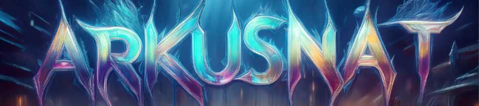

Stilistik & Zeichenmatrix
Quantenkomplott 3
Jedes Kapitel repräsentiert einen eigenen Frequenzbereich des Archivs.

Wissenschaftlich-philosophische Analyse.
Literarische Dekonstruktion im Sci-Fi-Kontext.
Jedes Kapitel repräsentiert einen eigenen Frequenzbereich des Archivs.

Wissenschaftlich-philosophische Analyse.
Literarische Dekonstruktion im Sci-Fi-Kontext.